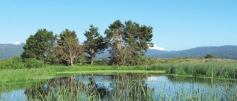
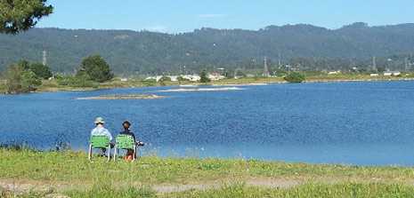

Eco Tipping Points: How a Vicious Cycle can become Virtuous
- Author: Amanda Suutari and Gerald Marten
- This article was published in Earth Island Journal 22(2):26-31.
- Download English (PDF)
- Download Thai (PDF)
The cicadas are in full voice on a sultry morning in May as we make our way along a rickety wooden boardwalk that snakes through a community mangrove forest near Thung Dase village in southern Thailand. The mangroves offer welcome shade near a dock where a small boat is moored. Handmade bamboo traps are set to catch mud crabs when the tides go out. In a flash of orange and turquoise, a kingfisher swoops to a low-hanging branch.
It’s hard to imagine that three decades ago the area’s lush abundance was collapsing into a wasteland. “At one time,” recalls Nom Ham Yak, chair of the forest’s management committee, “our economic base was crabs, fisheries, and rubber. Then areas were leased as concessions to private contractors to clear for charcoal, and the forest became badly degraded.”
The prospects for the area’s villages were so bleak that a revival would have seemed a fantasy. What brought them back from the brink was an Eco Tipping Point.
Eco Tipping Points offer a new paradigm for restoring our communities, both natural and human. Conventional approaches to ecological problems – from piecemeal micromanagement, to techno-fixes, to top-down regulation – often fail or generate new messes. But Eco Tipping Points show how the same forces that endanger environments and communities can be harnessed to heal them. To demonstrate what Eco Tipping Points are and how they work, consider two very different stories from two continents: the mangrove forests of Trang Province and the marshes of Arcata, California.
From Charcoal to Pink Gold
Five hundred thirty-five miles south of Bangkok, Trang Province is located on Thailand’s southwest coast at the western shore of the Andaman Sea. Thung Dase and its neighboring villages lie in the watershed of the Palian and Trang Rivers, which drain into the sea from the Bandthad mountain range. The villages cluster along the mangrove-lined coastal wetlands, providing a fertile buffer zone for marine and terrestrial life. Besides offering a rich variety of foods, mangrove forests supply medicinal plants and materials such as thatch for housing and fishing gear. They are also refuges and nurseries for juvenile fish, crabs, shrimp, and mollusks.
Big changes came in the 1960s, when the Thai government embraced the Western model of export-led development. Industrial trawlers freely violated the no-fishing zone two miles from shore. They ravaged the sea bed and coral reefs, swallowing fish stocks faster than they could regenerate. As their coastal fishery waned, fishers spent more time on their boats and went further from shore. Some used explosives or poisons to harvest the remaining fish, or invested in better fishing equipment – causing stocks to plummet even faster.
Meanwhile, the government had granted mangrove concessions to the private sector to make charcoal briquettes. As mangroves dwindled, so did the diverse and useful products they provided. “Plants and animals, especially crabs, became scarce,” explains Nom Ham Yak.
Their options narrowing, fishers began accepting menial jobs cutting mangroves for charcoal, working on commercial trawlers, or migrating into nearby cities for work. “Fishing incomes went down,” Ham Yak says.“The people in the village had to leave for towns to find work in fish-canning factories, rubber-tapping plantations, general day labor, or construction. When the men went out to work and the wives stayed in the village, family relations would suffer. People also started selling pieces of land because there was no work at that time.”
Worse, development agencies and banks had begun promoting shrimp farming in the mangrove forests. Unfortunately, the ‘pink gold’ of shrimp aquaculture can be a classic boom-bust venture in which the production from a shrimp pond declines drastically after the first five years. Local people discovered that initial quick returns were supplanted by mounting debts and environmental ruin as abandoned shrimp ponds spread across the landscape.
In 1999, a team led by economist Suthawan Sathirathai did a cost-benefit analysis of shrimp farming on a coastal village in Surathani Province, southern Thailand, to compare the monetary value of mangroves versus shrimp farms. When taking into account only marketable products, shrimp farms brought higher returns, with a net value of $9,335 US per acre compared to $1,665 for mangroves. But calculating in the indirect value of mangroves dramatically reversed these figures. When they assigned a monetary value to environmental services such as nurseries for fish and protection from erosion and storms, the value of the mangroves rose to $14,428, more than 50 percent higher than shrimp aquaculture.
The Positive Tip
As university students, Pisit Charnsnoh and his wife, Ploenjai, were part of a generation of democracy activists. After graduating from Khon Khaen University, Charnsnoh got involved with rural development and urban labor rights. In 1985, the couple moved to Ploenjai’s hometown in Trang Province, where they started a small organization called Yadfon Association (Yadfon means ‘raindrop’ in Thai), aimed at helping the coastal villages in the region. At that time, Trang province residents were locked into a vicious cycle of increasing poverty, unraveling society, and a deteriorating ecosystem.
Yadfon members spent nearly a year in dialogue with the villagers of Ban Leam Makham, working hard to gain the community’s trust. The approach was to support residents’ own insights into their shared crisis. Charsnoh points out that this method was more powerful than giving the villagers lectures. “We couldn’t go in as outsiders and tell them, ‘This or that species is disappearing, you have to be careful,’ or ‘You have to protect these forests.’” Over time, and with some success with micro-credit, well-digging, and other rural development schemes, Yadfon began to earn the villagers’ respect.
Through a series of meetings with Yadfon, villagers developed the idea of reviving the badly degraded mangrove forests around Ban Leam Markhamand Ban Thung Dase. Because the land was under government control, Yadfon staff acted as a go-between to obtain consent from provincial authorities to create a community mangrove forest. The first of its kind in Thailand, the forest covered 95 acres of land. It later became part of a 235-acre area that combined the mangrove forest with a sea grass conservation zone.
An emerging inter-village network created a system to manage the forest. Allowing use of some areas of the forest helped to get buy-in from a community that would otherwise break rules if the whole forest were declared off-limits. They prohibited shrimp farms inside the forests, set up no-fishing areas, discouraged the use of cyanide and dynamite, and banned push-nets altogether. They replanted some areas of the forest and designated others untouchable, to allow for natural regeneration. The network also began replanting the seagrass beds in the coastal waters of nearby Chao Mai village.
Their efforts paid off. There was an increase in the near-shore fish catch, and a species of fish thought to have disappeared returned. These early results boosted the villagers’ commitment and motivated them to further action. An endangered dugong spotted in the waters near Chao Mai village helped win government support for their seagrass protections zones; the dugong became a living symbol for conservation progress in the area.
Cycles and Tipping Points
Creating community mangrove forests was an Eco Tipping Point. It tipped the local community and environment from a vicious cycle to a virtuous cycle, and the momentum switched from destruction to recovery.
Vicious and virtuous cycles are ‘feedback loops.’ These mutually reinforcing cycles of cause and effect are the heart of Eco Tipping Points. In the negative tip, as mangroves were cleared, fisheries began to decline. As fish stocks fell, fishers worked harder to get them, causing stocks to fall ever faster. In this way, they were locked into a vicious cycle of declining resources and an accelerating race to get what little remained.
After the positive tip, the fishery began to restore itself. In a study of 500families between 1991 and 1994, total catch rose by 40 percent. Fishers spent three to four fewer hours per week on the water, while their net incomes increased by 200 percent. They could return with full boats without using dynamite or push nets. In this virtuous cycle, less pressure from fishers allowed fish stocks to recover faster, making the fishers’ jobs even easier.
The revival of the fishery spawned other virtuous cycles. Better incomes meant there was less need to migrate from villages. Instead of being locked into depletion, villagers were now locked into conservation, as the financial incentive to preserve mangroves now outweighed the incentive to destroy them.
Most importantly, investing in their future motivated the people to fight for it. A sense of ownership gave them the grit and confidence to confront encroaching trawlers and to lobby the government to enforce the two-mile no-fishing zone. It also made them less likely to sell off their land, which often ended up being converted to resort development. Reviving the forests also helped to put zoning limits on shrimp ponds. Charnsnoh explains that while many of their villages have shrimp ponds, they have kept the ponds outside the boundaries of the forests.
While the community mangrove forests started small, the virtuous cycles rippled out over time. Today, these districts include 10 community forests and four sea grass and dugong conservation areas totaling 50 square miles. Meanwhile, Yadfon has extended its involvement to some 60 villages in the three districts. Through a growing network of grassroots organizations, Charnsoh is involved with influencing policy at the national and international levels, lobbying for stronger legal standing for the forests, and gathering support to stop the practice of intensive shrimp farming. Meanwhile, Ploenjai is connecting with villages further inland, discovering new links between inland and coastal regions. “I was working with the fisher folk since the beginning, ”she explains, “and have moved up [the watershed]. Now we work with the whole ecosystem.”
- See the complete story of Thailand’s community mangroves
Treating Wastewater with Wetlands
Across the Pacific Ocean, a small university town nestled in the northern California coastal redwoods may seem worlds away from a fishing village of southern Thailand. But Arcata’s pioneering wetland and wildlife sanctuary reveals a similar underlying story: tipping a coastal ecosystem from a vicious cycle into a virtuous one.
Home to Humboldt State University, Arcata is a vibrant little community some 280 miles north of San Francisco. Historic charm is visible in the thriving downtown, and green space abounds with the community forest and wetland areas framing the vista of Humboldt Bay. Arcata’s Eco Tipping Point arrived when the community faced a sewage treatment crisis. Until the early 1950s the city discharged unchlorinated primary effluent into Humboldt Bay. Secondary treatment and chlorination were not added until the early 1970s. In 1974, federal water quality standards were revised, and state and regional authorities began cracking down.

Humboldt County, California decided to treat wastewater as a resource rather than a problem, and built the Arcata Marsh and Wildlife Sanctuary. The marsh relies on natural systems to filter the city's sewage.
The community faced a thorny dilemma: Buy into a proposed $25-million regional sewage processing plant to discharge treated, up-to-standard wastewater into Humboldt Bay – or devise a more environmentally acceptable alternative. The former would be a costly undertaking for a community whose population at the time was just 12,600. Also, the sewer pipeline was a potential nightmare, since ruptures under the bay could make the pollution worse.
Most importantly, the regional plant would have unleashed a vicious cycle of runaway sprawl. By laying the pipeline along the undeveloped land between Arcata and its neighbors, Arcatans believed developers would soon follow with strip malls, big-box retail zones, and subdivisions. More development would have affected the thriving downtown and locked residents into car-dependency. The sewage plant itself, along with the roads and infrastructure needed to support the development, would have demanded an unprecedented outlay from municipal coffers and taxpayers’ wallets.
The Problem is the Solution
The idea to treat the wastewater as a resource rather than a problem first came from Humboldt State University fisheries professor George Allen. In1969, he had begun testing whether Pacific salmon and cutthroat trout could be raised in ponds of seawater and partially treated wastewater. Bob Gearhart, another Humboldt State University professor, expanded on Allen’s idea. Why not use a marsh to treat municipal sewage more easily, more sustainably, and more economically? “The whole issue is the ownership of the wastewater– what you have control over,” explains Gearhart. “It’s not about disposal – it’s a resource issue.”
After a protracted and divisive political and legal battle known locally as ‘The Wastewater Wars,’ regional authorities reluctantly allowed the city to create a small version as a pilot project. If it was successful, the community would be free to expand to a fully functioning system.
The chosen site was a derelict brownfield that included a sealed landfill, two defunct logging mills, and a log pond. Creating the marsh first meant breaking up concrete where the lumber had once been stacked and stored on the old lumberyard site. National Guard engineers blew it up and carted it off. Next, a bulldozer terra-formed the ground, creating a micro-terrain similar to that of a wetland. Volunteers from the community planted several kinds of native marsh plants in order to have alternating areas of open water and vegetation. They took care to plant more densely in the farther reaches of the marsh in order to fully remove any solids that remained in the water. In1986, the treatment system was completed and became operational.
Today, the Arcata Marsh and Wildlife Sanctuary covers 154 acres of freshwater and saltwater marshes, tidal mudflats, and grasslands. Wastewater is piped from homes and buildings to the ‘headworks,’ where debris is removed and solids settle. The solids are sent to digesters for use as compost on the town’s community forest. The sewage is sent to oxidation ponds before entering a series of treatment and enhancement marshes. Naturally occurring processes progressively purify the water, then two rounds of chlorination bring it up to state standards before its release into Humboldt Bay.
When Eco Tipping Points launch virtuous cycles, they employ nature’s own processes to do most of the work. Instead of a multi-million dollar treatment plant, Arcata has used the “free” services of a wetland to purify its wastewater. Roots and stems of wetland plants form a dense, netlike filter that removes suspended solids. Plants and algae remove nutrients such as nitrogen and phosphorus, while bacteria and fungi decompose the solids and remove dissolved organic material. Bulrushes provide a canopy of shade, controlling the growth of algae, and helping to slow water flow so the microorganisms can do their job.
Plants and microorganisms pass organic material up the food web to small aquatic animals and insects, and ultimately to top predators such as hawks, foxes, and otters that have come to symbolize the wildness of Arcata’s wetland. As plants, animals, and microorganisms break down organic material to extract energy, the residue passes out of the wetland ecosystem and into the atmosphere as carbon dioxide and water. Meanwhile, larger animals, birds, and flying insects move out of the wetland, carrying organic material and nutrients and distributing them around the surrounding countryside. They also bring in seeds from other areas, promoting and supporting biodiversity. The end result is a wetland and wildlife sanctuary that supports 300 species of birds and mammals, 100 species of plants, and six species of fish.
As the wetland regenerated nature’s systems, it spun off virtuous cycles for humans as well. Arcata’s wastewater and derelict brownfield became economically and socially valuable. ‘Recycling’ gave Arcatans access to their formerly blocked-off waterfront. They gained a community space for leisure and recreation that draws as many as 150,000 visitors a year. Walking through a pathway surrounded by the songs of thrushes hidden in dense foliage, it is hard to imagine that the wetlands are actually working to break down household sewage. By creating a physical barrier to development, the wetland became a de facto ‘zoning restriction’ that was more effective than any government regulation. Students at Humboldt State University gained a research site. In the process, they provided a level of technical support, data collection, and monitoring that the town could not have afforded on its own.
More critically, choosing this unorthodox path set Arcata apart from its more conventional neighbors and fed the city’s sense of pride. The marsh became a shared symbol that has helped to shape local identity. The community’s motto today is “Flush With Pride.”
“I think the marsh has become symbolic of [the idea] that we can do things our way,” says Julie Fulkerson, a former Arcata mayor and councilor. “Thinking of this community without the marsh is very depressing. For one thing, if the massive [treatment] system had been built, it would have cost millions of dollars, and we’d be paying for it. And with a pipeline between Eureka and Arcata, I just can’t imagine why there would not have been development in that entire strip. It would have looked like any other blended community in California.”
- See the complete story of Arcata’s constructed wetland
Common Ground
In spite of their obvious differences, a deeper look at both Arcata and Trang Province reveals Eco Tipping Points at the source of each community’s revival. Both communities had found leverage points in the vicious cycles where targeted actions could reverse them. Feedback loops that created and reinforced environmental degradation were replaced by feedback loops that rescued the ecosystems. By allowing mangroves to regenerate, and by designing a system that could treat waste with very little external manipulation, the communities let nature do the work of restoring their shared resources. The cohesion that emerged as a result gave them the impetus to rise to new challenges.

The Arcata Marsh and Wildlife Sanctuary is a community leisure and recreation space that attracts some 150,000 visitors a year.
Despite their successes, these communities are not utopias. Both are on steep learning curves towards sustainability, and new challenges emerge a sold ones are tackled. But they show how human and natural systems can tip together out of decline and towards greater health and sustainability. They show that local citizens can devise their own environmental solutions, without elaborate government regulations or high-cost technologies. Sharing the stories of these Eco Tipping Points can demonstrate that achievements often considered unrealistic, costly, or otherwise unfeasible are not just desirable alternatives. They are practical ones.
Acknowledgement
- Amanda Suutari is an environmental journalist based in Vancouver, Canada.
- Gerald Marten is an ecologist at the East-West Center in Honolulu.
- Steve Brooks and Ann Marten provided editorial contributions.
- Thanks to members of Yadfon Association, Arcata City Hall, and Humboldt State University for their extensive assistance.
Futher Reading
Read more about Thailand’s community mangrove forests and Arcata’s constructed wetland.
{% include "back-to-top.njk" %}